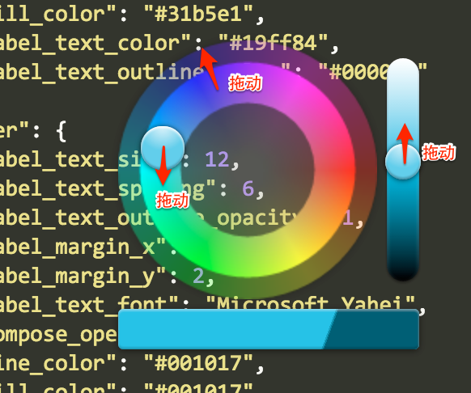

帮助
- 原理
- Map Designer会从服务器下载矢量瓦片数据、图标等内容，在本地进行渲染。因此，在浏览一个从未浏览过的地方时，开始会有一个缓慢的加载过程，请耐心等待。
- 字体
- 目前可用的字体有“Microsoft Yahei”(微软雅黑)、“Songti”(宋体)、“Kaiti”(楷体)、“Libian”(隶书)。
- 颜色
- 在颜色值上点击可以调出颜色选择器，如下图：
- 
- 折叠
- 点击编辑器左侧的行数可以折叠大括号{ }包围的内容，方便浏览。
- 可配置的样式
-
属性 说明 作用范围 默认值 可取值 background_color 地图背景色 地图 background_image 地图背景纹理（相对icon目录） 地图 background_opacity 地图背景透明度 地图 1 icon 图标目录 地图 "icon/base" antialias 抗锯齿 所有图层 "true" "true" "false" visible 是否绘制 所有图层 "true" "true" "false" res_max 图层可显示的最大分辨率 所有图层 res_min 图层可显示的最小分辨率 所有图层 symbol_type 绘制的符号类型 所有图层 "raster" "fill" "line" "marker" "label" "line_label" "polygon_label" comppse-operation 当前图层如何与下面图层融合 所有图层 "SrcOver" "src" "dst" "SrcOver" "DstOver" "SrcIn" "DstIn" "SrcOut" "DstOut" "SrcATop" "DstATop" "Xor" "Plus" "Modulate" "Screen" "Overlay" "Darken" "Lighten" "ColorDodge" "ColorBurn" "HardLight" "SoftLight" "Difference" "Exclusion" "kMultiply" "Hue" "Saturation" "Color" "Luminosity" outline_color 外边线颜色 所有图层 outline_opacity 外边线透明度 所有图层 marker_color 标记的颜色 标记图层 "#000000" marker_opacity 标记的透明度 标记图层 1 marker_image 标记的填充纹理 标记图层 marker_shape 标记的形状 标记图层 "point" "circle" "square" "point" marker_size 标记的尺寸 标记图层 5 marker_offset_x 标记的水平偏移 标记图层 0 marker_offset_x 标记的垂直偏移 标记图层 0 allow_overlap 允许互相遮盖 标记图层 1 line_color 线的颜色 线图层 "#000000" line_opacity 线的透明度 线图层 1 line_image 线的填充纹理 线图层 line_width 线宽 线图层 1 line_join 线折角样式 线图层 "miter" "miter" "round" "bevel" line_cap 线端点样式 线图层 "butt" "butt" "round" "square" line_dasharray 线虚线样式 线图层 数组，如[10, 5] fill_color 多边形的填充色 多边形图层 "#0000ff" fill_opacity 多边形的透明度 多边形图层 1 fill_image 多边形的填充纹理 多边形图层 label_text_font 标注的字体 标注图层 可选字体 label_text_size 标注的大小 标注图层 12 label_text_color 标注的颜色 标注图层 "#000000" label_text_opacity 标注的透明度 标注图层 1 label_text_outline_color 标注的外边线颜色 标注图层 "#ffffff" label_text_outline_width 标注的外边线宽度 标注图层 5 label_text_outline_opacity 标注的外边线透明度 标注图层 1 label_field 标注的字段 标注图层 label_icon 标注的图标 标注图层 label_text_spacing 标注的字符间距 标注图层 0 label_max_line_length 标注的最大长度，超出则换行 标注图层 label_margin_x 标注的横向间距 标注图层 0 label_margin_y 标注的纵向间距 标注图层 0 label_align 标注的对齐方式 标注图层 "center|left|right|top|
bottom|top-left|top-right|
bottom-left|bottom-right"可选部分位置标注，如"top|bottom"表示只能在上下位置绘制